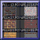
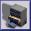
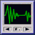
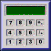
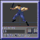
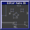
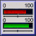
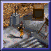
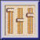
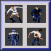

Novedades del entorno en la versión 2.0
Más flexibilidad y sencillez de uso. El entorno de desarrollo de DIV
Games Studio ha evolucionado en múltiples pequeños aspectos, y entre todos
conforman un interfaz aún más intuitivo que el de la versión anterior.
Una nueva ayuda. La ayuda se ha
actualizado, se ha estructurado mejor, y por supuesto contempla todas las novedades del
lenguaje DIV. El formato de la ventana incluye una nueva barra de navegación.
 Multiples tamaños de pincel.
Multiples tamaños de pincel. En el
editor gráfico se pueden seleccionar ahora pinceles de múltiples tamaños
y formas, monocromos o en escala de grises. Con la tecla
T se accede al
nuevo diálogo; se pueden añadir nuevos pinceles, añadiéndolos al
fichero
BRUSH.FPG del directorio
SYSTEM.
Dibujo con capas o texturas. En el editor
gráfico se accede con la tecla U a un nuevo diálogo en el que
se puede seleccionar cualquiera de los mapas del escritorio como textura para pintar (con la
tecla X se puede ver y desplazar esta textura). Se ha mejorado la
herramienta del aerosol, la barra de puntos de control, y
además se han añadido nuevos comandos de teclado (como
K para copiar un gráfico a ventana, o +/- para
cambiar de punto de control).
Visualizadores gráficos. Casi todas
las ventanas para abrir archivos disponen de una casilla denominada
Imágenes que permite visualizar el contenido de estos archivos antes
de que sean cargados. Además es posible cargar varios archivos de una
sóla vez marcando estos con el ratón mientras se mantiene la tecla
Control pulsada (la tecla Mayúsculas permite marcar
varios consecutivos).
Sistema mejorado de ficheros. En esta
versión se ha mejorado la gestión interna de los FPG; se han eliminado errores,
se pueden visualizar reducciones de los mapas contenidos, imprimir las listas, transferir un
FPG completo a un mapa y viceversa.
Editor de efectos de sonido. El sistema de
audio es completamente nuevo, permitiéndose muchas más operaciones, formatos e
incluyéndose un mezclador y un editor de efectos de
sonido. Se puede acceder a este editor a partir del menú de sonidos.
Evaluación de expresiones. Ahora se
puede acceder a las nuevas ventanas calculadoras (desde el menú de
sistema) para evaluar expresiones numéricas mientras se está programando, sin
salir del entorno.
Generador de sprites. El generador de
personajes es también una nueva característica de esta versión. Se ha
diseñado para ofrecer una base sobre la que realizar dibujos de seres humanos y
animaciones realistas. Pudiendo ser posteriormente utilizados estos fotogramas en el editor
gráfico para realizar sobre los mismos cualquier tipo de modificación.
Editor de mapas tridimensionales. El
menú de mapas 3D, así como el editor de estos y todas las funciones
relacionadas con los mismos del lenguaje de programación son una nueva
característica de esta versión de DIV Games Studio.
Perfiles de tiempo. Desde el trazador de
programas se puede acceder, pulsando F11, a los perfiles de tiempo del programa. Estas
estadísticas indican que está consumiendo tiempo de proceso durante la
ejecución de un programa, y permiten la optimización de la velocidad de los
programas manualmente.
Nuevos ejemplos. Se incluyen
múltiples juegos y programas desarrollados por los usuarios con la versión
anterior de DIV Games Studio. Además, en el CD-ROM se podrán encontrar
múltiples utilidades shareware o de libre uso que complementan a este entorno de
desarrollo.
Facilidad de impresión. Esta
versión de DIV Games Studio permite imprimir, además de los listados de los
programas, las listas de gráficos contenidas en un FPG y las páginas de ayuda
electrónica.
Controles de volumen. Dentro de las
mejoras incluidas en el sistema de audio, ahora existe un mejor control de los niveles de
volumen, tanto en el entorno como en los progrmas. En el reproductor de CD aparece un
pequeño botón que da acceso al mezclador.
Librería de gráficos. Se ha
ampliado y estructurado mejor la librería de gráficos incluida con el programa.
Además ahora se pueden importar mapas de cualquier número de colores en
formatos BMP, PCX o JPG.
Nuevo sistema de instalación. El
sistema de instalación de los programas ha sido completamente rediseñado,
generándose instalaciones protegidas contra modificaciones y más compactas,
utilizando un interface gráfico adaptable y más intuitivo.
Y un largo etcétera. Existen muchas
otras pequeñas mejoras en el entorno, muchas que pasarán desapercibidas, pero
que estan ahí haciéndolo más potente y fácil de utilizar. A
continuación se detallan algunas que pueden ser más relevantes.
- Se ha optimizado el proceso de entrada y salida del entorno, así
como la ejecución de los programas desde el mísmo, ahora las cargas son
más rápidas y los tiempos de espera más cortos.
- El editor de programas muestra ahora los listados coloreados, resaltando
las palabras clave del lenguaje, además se puede configurar mejor definiendo, por
ejemplo, el tamaño de las tabulaciones.
- Ahora, al entrar en el entorno, se podrá seleccionar si desea continuar con
la sesión anterior o comenzar una nueva.
- Es posible seleccionar más modos de visualización para el
entorno, dependiendo de los modos soportados por su tarjeta de vídeo y el adaptador VESA
instalado.
- Un editor de gamas de colores facilita la generación de
explosiones (que ahora puede ser abortada) y la preparación del tapiz de fondo (ahora se
muestra una previsualización del mismo).
- Se puede configurar la velocidad del puntero del ratón con una
pequeña barra presente en la ventana de configuración del menú de
sistema.
- En las ventanas de las fuentes aparece una muestra de letras,
además de indicarse que conjuntos de caracteres tienen definidos.
- Es posible generar fuentes de letras con antidentado, simplemente creando
las mismas con un reborde de 1 punto del color de fondo.
Ver también: Novedades del lenguaje de
programación